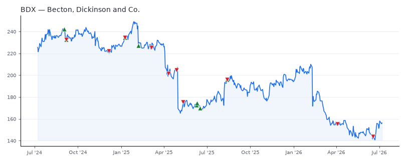

bullish · bearish · n/a — dots: price>SMA10 · SMA10>SMA50 · SMA50>SMA200 · up>down volume (20d)
Health Care Equipment & Services · large cap · ★ 3 buyer(s) sit on a committee that regulates this industry
Members who bought BDX earned a dollar-weighted -7.9% from their disclosure dates, versus +12.9% for the S&P 500 over the same holding windows (-20.8% alpha).

▲ green = a disclosed purchase · ▼ red = a disclosed sale (plotted on disclosure date)
Becton Dickinson operates in four business units. Medical essentials (35% of total sales) includes the legacy medical surgical unit, which sells catheters, syringes, and infection prevention products. Connected care (24%) core products include the Alaris infusion pump, Pyxis dispensing system, and pharmacy automation platforms. Biopharma systems (13%) produces prefillable syringes and autoinjectors. Interventional (29%) is composed of the surgery, peripheral vascular, and urology segments. More than 60% of revenue comes from the United States. SURGICAL & MEDICAL INSTRUMENTS & APPARATUS · website
| Revenue | $21.8B | Net income | $1.7B |
|---|---|---|---|
| Operating income | $2.6B | Diluted EPS | $5.82 |
| Assets | $55.3B | Equity | $25.4B |
| Member | Chamber | Out-performer | Disclosed buys $ | Return on buys |
|---|---|---|---|---|
| Rohit Khanna | house | yes | $48K | -3.3% |
| Thomas H. Kean ★ | house | — | $16K | -26.8% |
| Rob Bresnahan | house | — | $8K | -9.4% |
| John James ★ | house | — | $8K | -4.0% |
| Lisa McClain ★ | house | — | $8K | +0.0% |
Disclosed $ figures are bracket midpoints — filings report ranges (e.g. $1,001–$15,000), not exact amounts.